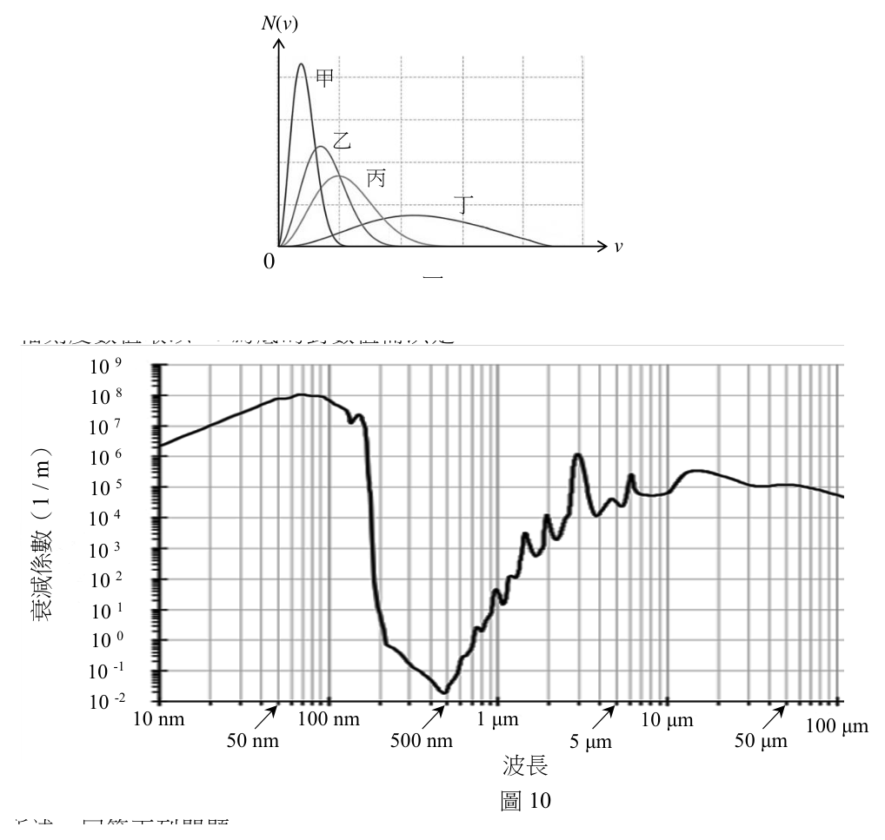
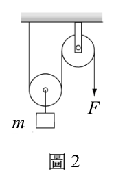
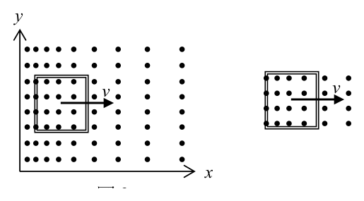
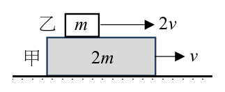
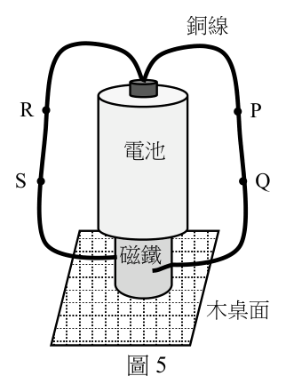
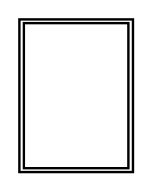
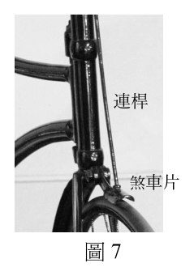
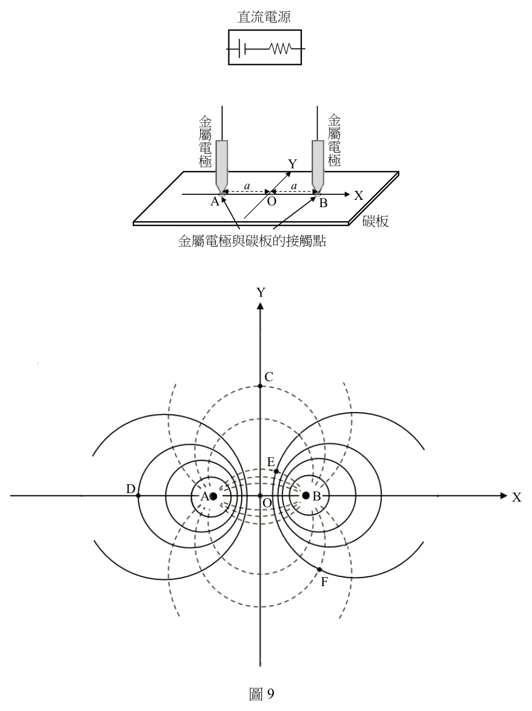
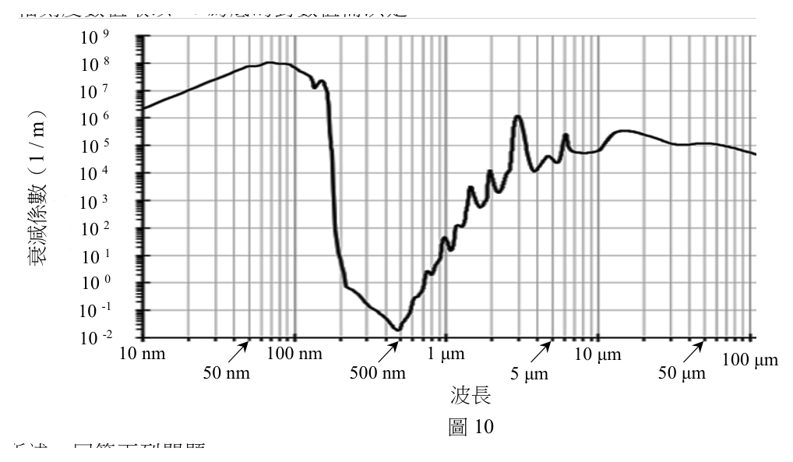

開卷有益 ／
分科測驗 ／ 物理 ／ 114 年114 年分科測驗物理試題與答案
這一頁是民國 114 年分科測驗物理的整份歷屆試題，共 24 題，題目與標準答案出自大考中心 分科測驗歷年試題（依著作權法 §9，考試試題不受著作權保護），其中 24 題附有詳解。以下逐題列出題幹、選項與答案；要計時作答或記錄成績，請用線上練習。
大學入學考試中心原始場次代碼：分科物理
線上作答這一科 →
全部 24 題
第 1 題
2024 年聯合國大會宣布2025 年為國際量子科學與科技年(IYQ),以紀念海森堡及
薛丁格分別於1925 年及1926 年提出全新量子力學數學表述方式,並與1900 年代初期
歐洲科學家,如普朗克、愛因斯坦、波耳、德布羅意等,共同奠定第一次量子革命的
基礎,建立量子科技的發展。下列有關量子力學發展的敘述何者正確?
（A） 普朗克提出量子論成功解釋氫原子光譜的性質（B） 德布羅意提出物質波說明波與粒子的二象性,僅適合於解釋電子的性質（C） 波耳提出的原子模型,引入量子化能階概念說明原子核的組成與核衰變性質（D） 當電子束穿過雙狹縫,各電子射到屏幕上的位置,可用量子力學精準預測（E） 量子力學理論成功地描述電子在原子中的空間分布狀態及量子化能量的特性答案：（E）
詳解與考點 正解：量子力學以量子化能量與波函數描述原子中的電子，能預測電子在不同位置出現的機率分布，並說明原子能階離散的特性。這正是（E）所述內容，故選 E。
A：普朗克的量子論首先用於解釋黑體輻射，不是直接成功解釋氫原子光譜。
B：德布羅意的物質波適用於所有具有動量的物質，不限於電子；電子只是最容易觀察波動性的例子之一。
C：波耳模型以量子化能階解釋原子光譜，並非用來說明原子核的組成或核衰變。
D：量子力學可精準預測大量電子累積後的干涉機率分布，但單一電子落在螢幕何處只能給出機率，不能逐顆精準預告位置。
本題考點：量子化（quantization）——原子束縛態的可允許能量是離散的，遇到光譜問題時要先連結能階差；波函數（wavefunction）——波函數提供位置等物理量的機率分布，不等於單次測量的確定軌跡；機率詮釋（probabilistic interpretation）——量子預測可對統計結果非常精準，卻不必然決定單一事件的位置。
第 2 題
圖1 甲、乙、丙、丁四條曲線為1 莫耳氦氣分子在不同溫度下的分子運動速率分布圖,
其中橫軸v 為氣體分子的運動速率,縱軸 N (v ) 為對應v 之每單位速率的氣體分子數。
N(v) 下列選項何者正確?

（A） 各曲線代表的氣體溫度高低依序為 甲
丁>丙>乙>甲（B） 各曲線代表的氣體平均動能大小依序為 乙
甲>乙>丙>丁 丙
丁（C） 各曲線下的面積大小依序為甲>乙>丙>丁
v（D） 各曲線代表的氣體方均根速率大小為 0
甲=乙=丙=丁 圖1（E） 若改用1莫耳的氮氣在曲線乙的溫度來作圖,所得曲線與圖1中的曲線乙相同答案：（A）
詳解與考點 正解：同為 1 莫耳的氦氣時，各速率分布曲線下的總面積相同；溫度愈高，分子的平均動能與特徵速率愈大，分布會往高速端移動且變寬。（A）所列的丁>丙>乙>甲符合此溫度與速率分布的關係，故選 A。
B：（B）把平均動能的大小次序排成與溫度相反。對同一種理想氣體，平均動能只由絕對溫度決定，溫度高者平均動能較大。
C：（C）將面積排出大小次序不成立。曲線下的面積代表分子總數，四者皆為 1 莫耳氦氣，面積應相等。
D：（D）將方均根速率視為相同不成立。方均根速率隨絕對溫度增加而增大。
E：（E）雖把溫度保持為曲線乙的溫度，但改成氮氣後分子質量已改變；在相同溫度下，氮分子的特徵速率較氦分子小，分布曲線不會相同。
本題考點：麥克斯威速率分布（Maxwell–Boltzmann speed distribution）——同種氣體升溫時，分布向高速端移且變寬；理想氣體平均動能（mean kinetic energy）——同種氣體以絕對溫度判斷平均動能大小；方均根速率（root-mean-square speed）——同溫下分子量較小者速率較大。
第 3 題
1909 年拉塞福以α粒子對金箔作散射實驗而奠立原子結構之基礎模型,下列對散射實驗
結果的敘述,何者錯誤?
（A） 以α粒子對金箔作散射實驗,是為了探究原子內部正電荷的分布是否均勻（B） 實驗結果發現大部分之α粒子可射穿金箔（C） 實驗結果發現有非常少數之α粒子被反彈回來（D） 實驗中出現反彈回來之α粒子可解釋為強作用對α粒子產生散射（E） 拉塞福的散射實驗發現了原子核之存在答案：（D）
詳解與考點 正解：少數 α 粒子大角度偏轉甚至反彈，表示原子的正電荷與大部分質量集中在很小的區域；造成偏轉的是 α 粒子與原子核正電荷間的庫侖斥力，不是強作用力，故選 D。
A：拉塞福以散射結果檢驗正電荷是否均勻分散於原子內；若均勻分布，不會預期出現極少數的大角度反彈。
B：大多數 α 粒子直接穿過金箔，顯示原子內大部分是空間。
C：極少數 α 粒子反彈回來，正是正電荷高度集中、且能產生強烈電斥力的關鍵觀察。
E：由穿透與少數大偏轉兩類結果，拉塞福提出具有小而帶正電原子核的模型。
本題考點：拉塞福金箔散射（Rutherford scattering）——看到「大多數穿透、少數反彈」時，判為原子核小而集中；庫侖力（Coulomb force）——同號電荷在未接觸時即可互斥，適合解釋 α 粒子的大角度偏轉；強作用力（strong interaction）——主要在核子極短距離內作用，不能用來說明金箔散射的主因。
第 4 題
有一質量為m 的物體懸掛於滑輪組下,如圖2 所示。假設滑輪與繩子的質量以及摩擦力
皆可忽略不計。若施力F = mg ,其中g 為重力加速度,則該物體的加速度
量值為何?
1 1

（A） 0（B） g（C） g
4 2（D） g（E） 2g F
m
圖2答案：（D）
詳解與考點 正解：理想滑輪中同一條無質量繩的張力處處相同，施力 F=mg 時有 T=mg。載重端由兩段繩共同向上拉，因此上拉合力為 2T=2mg；扣除重力 mg 後，合力為 mg。由 ma=mg 得 a=g，故選 D。
A：（A）0 代表把上拉合力與重力誤當成相等；兩段繩各提供 T，總上拉力不是單一 T。
B：（B）此較小的加速度倍率是把支撐繩的張力或合力多除了一次，與 2T-mg=mg 不符。
C：（C）此倍率只計入一段繩的上拉作用；動滑輪受兩段繩支撐，兩個張力都必須納入。
E：（E）2g 把 2T 當成淨力，漏扣物體本身受到的重力 mg。
本題考點：理想滑輪（ideal pulley）——同一無質量繩上的張力相等，先畫出每一段繩的作用力；受力分析（free-body diagram）——淨力必須把向上與向下的力一起相加；牛頓第二定律（Newton’s second law）——由 ΣF=ma 求加速度。
第 5 題
某生比較太陽系中行星與其最大衛星的資料,相關資料如表一,表中的衛星皆可視為
繞其行星作等速圓周運動。
表一
行星質量 衛星質量 衛星繞行星週期 衛星與行星平均距離
行星 最大衛星
(kg) (kg) (day) (km)
地球 6.0 × 10 24 月球 7.4 × 10 22 約為28 3.6 × 105
土星 ? 泰坦衛星 1.3 × 10 23 約為14 1.2 × 10 6
試估算土星的質量約為多少kg?
行星 行星質量 (kg) 最大衛星 衛星質量 (kg) 衛星繞行星週期 (day) 衛星與行星平均距離 (km) 地球 6.0 ×1024 月球 7.4 ×1022 約為28 3.6 ×105 土星 ? 泰坦衛星 1.3 ×1023 約為14 1.2 ×106
（A） 10 23（B） 10 25（C） 10 27（D） 10 29（E） 10 31答案：（C）
詳解與考點 正解：衛星作圓周運動時，T²/r³=4π²/(GM)，同一常數下行星質量 M 與 r³/T² 成正比。以表中的地月系統作比例：M_土/M_地=(1.2×10⁶ km/3.6×10⁵ km)³×(28 day/14 day)²=(10/3)³×2²≈1.5×10²。故 M_土≈1.5×10²×6.0×10²⁴ kg=9.0×10²⁶ kg，量級為 10²⁷ kg，故選 C。
A：（A）10²³ kg 不但小於地球，與半徑更大、週期更短所代表的強重力作用相反。
B：（B）10²⁵ kg 比比例估算值小約兩個數量級，無法讓泰坦在表列半徑下以 14 day 繞行。
D：（D）10²⁹ kg 比估算值大約兩個數量級，會使同半徑軌道的週期遠短於 14 day。
E：（E）10³¹ kg 又比估算值大約四個數量級，與表中行星—衛星系統的尺度不符。
本題考點：開普勒第三定律（Kepler’s third law）——比較同類圓軌道時，以 M∝r³/T² 建立比例；量級估算（order-of-magnitude estimation）——先求無因次比值，再乘已知系統的質量；單位消去（unit cancellation）——同一比例中的 km 與 day 分別相消，不必先換成 SI 單位。
第 6 題
小角度的單擺擺動可視為簡諧運動。一個擺長0.20 m 的單擺作小角度的左右來回擺動,
當擺錘由左向右經過平衡位置時開始計時,經過1.5 s 後,下列關於單擺運動狀況的
敘述何者正確?(取重力加速度為 9.8 m / s 2 )
（A） 擺錘向左運動且速率增加（B） 擺錘向左運動且速率減少（C） 擺錘向右運動且速率減少（D） 擺錘向右運動且速率增加（E） 擺錘向左作等速運動答案：（B）
詳解與考點 正解：小角度單擺的週期由 T=2π√(L/g) 決定。代入 L=0.20 m、g=9.8 m/s^2，得 T=2π√(0.20/9.8)≈0.90 s；1.5 s≈1.67T。擺錘在 1.5T 時通過平衡位置向左且速率最大，之後再走 0.17T 會朝左端點上升並減速，故選 B。
A：此時運動方向確為向左，但離開平衡位置後重力的切向分量與運動方向相反，速率應減少而非增加。
C：1.67T 所在的是由平衡位置往左端點的區段，不是向右運動的區段。
D：速率增加只會發生在擺錘由端點往平衡位置運動時；此時正由平衡位置離開，因此不符合。
E：單擺的切向加速度隨位移而變，除通過平衡位置的瞬間外都不是等速運動。
本題考點：單擺週期（simple pendulum period）——小角度時先以 T=2π√(L/g) 換算實際時間為週期分率；簡諧運動（simple harmonic motion）——平衡位置速率最大、端點速率為零；恢復力（restoring force）——物體離開平衡位置時，加速度指向平衡位置，據此判斷速率增減。
第 7 題
質量720 kg 的無人駕駛實驗性電動車以20 m/s 等速度在斜面上前進。已知電動車以
1200 V 的電池提供動力來源,且馬達的電能轉換作功的效率接近100%,在直線爬升
過程中,除了須克服重力之外,仍須克服600 N 的空氣阻力,其他阻力則忽略不計。
若電動車在斜面上前進120 s,爬升的垂直高度為200 m,則該電池必須提供約多少A
的電流?(取重力加速度 g = 10 m / s 2 )
（A） 5.0（B） 10（C） 15（D） 20（E） 25答案：（D）
詳解與考點 正解：電池輸出的功率要同時供應爬升增加的重力位能與克服空氣阻力的作功。120 s 內，重力作功 Wg=mgh=720×10×200=1.44×10^6 J，故 Pg=Wg/t=1.20×10^4 W；空氣阻力功率 Pair=Fv=600×20=1.20×10^4 W。總功率 P=2.40×10^4 W，電流 I=P/V=24000/1200=20 A，故選 D。
A：5.0 A 對應 6000 W，連克服重力或空氣阻力任一項所需的 12000 W 都不足。
B：10 A 對應 12000 W，剛好只算到重力作功或空氣阻力作功其中一項，漏掉另一項。
C：15 A 對應 18000 W，介於單一阻力與總需求之間，仍不足以維持題設的等速度爬升。
E：25 A 對應 30000 W，超過重力與空氣阻力合計的 24000 W。
本題考點：功率（power）——等速運動時以每秒作功 P=W/t 或 P=Fv 計算各能量需求；重力位能（gravitational potential energy）——垂直爬升以 mgh 計算，不可只用斜面路程；電功率（electric power）——效率為 100% 時，P=VI 可直接把機械功率換成電流。
第 9 題
智慧監控運送物體的機台,在置物載台底部裝設固定的方形金屬線圈,載台系統置於
隨+x 方向均勻變化的磁場B 中,磁場B 方向垂直射出紙面,
y
而線圈平面垂直於磁場,示意結構如圖3 所示。若金屬線圈
的面積為 0.20 cm 2 ,線圈的匝數為1000 ,當載台在磁場中以
固定速率v 朝+x 方向移動距離 Δ x = 1.0 m ,磁場強度變化量 v
Δ B = 0.50 T ,測量到線圈中感應電動勢量值為1.0 mV,
則載台(線圈)的速率v 為何?
x

（A） 0.10 m/s（B） 1.0 m/s（C） 10 m/s 圖3（D） 100 m/s（E） 1.0 km/s答案：（A）
詳解與考點 正解：線圈面積先換算為 A=0.20 cm²=0.20×10^-4 m²=2.0×10^-5 m²。移動時間 Δt=Δx/v，因此法拉第定律給 ε=NAΔB/Δt=NAΔBv/Δx。代入 ε=1.0 mV=1.0×10^-3 V、N=1000、ΔB=0.50 T、Δx=1.0 m，v=εΔx/(NAΔB)=(1.0×10^-3×1.0)/(1000×2.0×10^-5×0.50)=0.10 m/s，故選 A。
B：（B）1.0 m/s 代入原式會得到 10 mV，為量測值的 10 倍。
C：（C）10 m/s 代入原式會得到 100 mV，為量測值的 100 倍。
D：（D）100 m/s 代入原式會得到 1.0 V，為量測值的 1000 倍。
E：（E）1.0 km/s=1000 m/s，代入原式會得到 10 V，與 1.0 mV 相差 10⁴ 倍。
本題考點：法拉第定律（Faraday’s law）——感應電動勢由磁通量改變率求得；面積單位換算（area conversion）——1 cm²=10^-4 m²，平方換算不可漏掉；比例檢核（proportionality check）——在其他量固定時，ε 與 v 成正比，可快速淘汰倍率不符的選項。
第 10 題
某生進行光的單狹縫繞射實驗時,分別以波長為λ與λ′的光,垂直入射在同一狹縫上,
在狹縫與屏幕的位置均不變動下,觀察屏幕上產生的繞射圖形。若波長為λ的光所形成的
第二暗紋中線與波長為λ′的光所形成的第三暗紋中線正好重合,則波長的比 λλ′為何?:
（A） 2:1（B） 3:2（C） 1:2（D） 2:3（E） 4:3答案：（B）
詳解與考點 正解：單狹縫暗紋滿足 a sinθ = mλ。兩道暗紋在同一位置重合，表示角度 θ 相同；波長為 λ 的第二暗紋與波長為 λ′ 的第三暗紋因此有 2λ = 3λ′，所以 λ/λ′ = 3/2，故選 B。
A：2:1 不符合重合條件 2λ = 3λ′，把暗紋階數的2與3誤作可直接約成此比。
C：1:2 既未反映第二、第三暗紋的階數，也不滿足兩暗紋位置相同的條件。
D：2:3 是正確比值的倒數，會對應到把 λ 與 λ′ 的位置交換。
E：4:3 不符合由第二、第三暗紋重合所列出的比例關係。
本題考點：單狹縫繞射（single-slit diffraction）——暗紋位置要用 a sinθ = mλ 判斷，m 是暗紋階數；暗紋階數（dark-fringe order）——兩圖樣在同一位置重合時，令兩邊的 mλ 相等即可建立波長比。
第 12 題
在波耳氫原子模型中,假設電子基態(量子數 n = 1 )的軌道半徑為R ,電子在這個軌道上
運動時的能量為E ,則下列敘述何者正確?
E
（A） 電子在 n = 3 軌道上運動時的能量為
3（B） 電子在 n = 3 軌道上運動時的半徑為6R（C） 電子在 n = 3 軌道上運動時的半徑為3R（D） 當電子從 n = 3 的軌道躍遷到 n = 1 的軌道時,其電位能和動能的總和保持不變（E） 當電子從 n = 3 的軌道躍遷到 n = 1 的軌道時,其電位能減少的絕對值大於動能增加的
絕對值
二、多選題(占30分)答案：（E）
詳解與考點 正解：波耳模型中 r_n=n^2R、E_n=E/n^2，且基態總能量 E 為負。當電子由 n=3 躍遷到 n=1 時，U_n=2E_n、K_n=-E_n；電位能減少的絕對值為 |2E-2E/9|=16|E|/9，動能增加的絕對值為 |-E-(-E/9)|=8|E|/9，前者較大，故選 E。
A：n=3 的總能量為 E/9，不是 E/3。能量大小隨 1/n^2 變化，不能只除以 n。
B：n=3 的軌道半徑為 3^2R=9R，不是 6R。
C：半徑與 n^2 成正比，所以 n=3 時為 9R，不是 3R。
D：電子由 n=3 降到 n=1 時會放出光子，電子本身的總能量由 E/9 變為 E，並不保持不變。
本題考點：波耳氫原子模型（Bohr model）——半徑按 n^2 增加，總能量按 1/n^2 變化；庫倫束縛系統能量關係（Coulomb bound-state energy）——U=2E_total、K=-E_total，可比較躍遷前後的能量變化；能量守恆（energy conservation）——電子能量的減少由放出的光子帶走，不能誤認電子總能量不變。
第 13 題 （多選）
某校的科學實驗室有甲、乙兩個電茶壺,甲的容積為1.0 L,加熱功率為1500 W,乙的
容積為1.5 L,加熱功率為1000 W。假設加熱過程中的熱散逸與電茶壺本身所吸收的熱
皆可忽略,這兩個電茶壺在正確插電使用下,將水從20°C加熱到90°C,且電能轉換為
水的熱能之效率為100%,則下列推論哪些正確?
（A） 兩者各自裝滿水後加熱,甲和乙所消耗的電能比為3:2（B） 兩者各自裝滿水後加熱,甲和乙所需的時間不相同（C） 兩者各自加熱500 mL的水,甲和乙所消耗的電能相同（D） 兩者各自加熱500 mL的水,甲所需的時間和乙相同（E） 甲加熱900 mL的水和乙加熱600 mL的水,所需的時間相同答案：（B）（C）（E）
詳解與考點 正解：關鍵在題幹指定電能全數轉為水的熱能，因此能量先用 Q=mcΔT 比較，時間再用 t=Q/P 比較。水的比熱與升溫 ΔT 都相同時，所需電能只與水量成正比，而加熱時間還要考慮電茶壺的功率，故選 BCE。
B：兩壺裝滿時，甲的水量為 1.0 kg、乙為 1.5 kg，所需熱量之比為 2:3；但功率之比為 1500:1000=3:2，所以 t甲/t乙=(2/3)/(3/2)=4/9，所需時間不相同。
C：兩者各加熱 500 mL 的水，水量與 ΔT 完全相同，Q=mcΔT 相同；效率均為 100%，消耗的電能也相同。
E：甲加熱 900 mL 時，t甲 與水量除以功率成正比，為 0.9/1500；乙加熱 600 mL 時為 0.6/1000。兩者皆為 0.0006，因此時間相同。
A：裝滿水時的電能比應為水量比 1.0:1.5=2:3，不是 3:2。3:2 是兩壺功率的比，不能直接當成能量比。
D：各加熱 500 mL 時熱量雖相同，但甲的功率較大，t甲/t乙=1000/1500=2/3，因此甲較快完成。
本題考點：熱量計算（heat capacity）——同種物質升溫相同時，以 Q=mcΔT 判斷所需能量，水量倍增則熱量倍增；功率（power）——固定能量下用 t=Q/P，比較時間時必須同時看熱量與功率；能量轉換效率（energy conversion efficiency）——效率為 100% 時輸入電能可直接等於水吸收的熱量。
第 14 題 （多選）
光滑水平面上有兩個質量不同的小木塊,其中一個為靜止,另一個速率為v ,兩木塊
發生一維正面碰撞,碰撞後兩木塊的速度分別為 1v 與 2v 。下列關於碰撞前後兩木塊速度
的敘述哪些正確?
（A） 無論是否為彈性碰撞,在碰撞後 1v 與 2v 皆不為零（B） 若為彈性碰撞,則碰撞後 1v 與 2v 皆不為零（C） 若為彈性碰撞,則 v1 − v2 = v（D） 若為非彈性碰撞,則 v1 − v2 必不為零（E） 若為非彈性碰撞,則 v1 − v2 必大於v答案：（B）（C）
詳解與考點 正解：本題把原先靜止的木塊列為 1、原先以速率 v 運動者列為 2，且特別限定兩木塊質量不同。彈性碰撞除動量守恆外，還有接近速率等於分離速率；依題目的有向速度記號，可得 v₁−v₂=v，且兩個碰撞後速度均不為零，故選 BC。
B：對一維彈性碰撞，原先靜止木塊的碰撞後速度必非零；原先運動木塊若要恰好停下，兩木塊質量必須相同。題幹已排除等質量情形，因此兩者皆不為零。
C：彈性碰撞的恢復係數 e=1，分離相對速率等於接近相對速率。原先兩者的相對速率為 v，依題目速度方向即為 v₁−v₂=v。
A：非彈性碰撞只要求動量守恆，不保證兩個末速度皆非零；在適當質量比下，可能有其中一木塊碰撞後恰好靜止。
D：完全非彈性碰撞時兩木塊黏在一起，以共同速度運動，故 v₁−v₂=0；「必不為零」過度限定。
E：非彈性碰撞的恢復係數滿足 0≤e<1，分離相對速率小於接近相對速率，所以 v₁−v₂ 不會大於 v。
本題考點：一維碰撞（one-dimensional collision）——先固定正方向與各木塊編號，再比較有向速度；彈性碰撞（elastic collision）——除動量守恆外，分離相對速率等於接近相對速率；恢復係數（coefficient of restitution）——非彈性碰撞的 e<1，完全非彈性時 e=0 且兩物體同速。
第 15 題 （多選）
如圖4 所示,質量為2m 之木塊甲放在光滑水平面上,其上置放質量為m 之木塊乙,
兩木塊間接觸面並非光滑。當時間 t = 0 時,地面靜止觀察者測得木塊甲與乙的速度方向
皆向右,量值分別為v 與2v。若木塊乙沒有掉落,則下列敘述哪些正確?

（A） 木塊甲的速率最大為2 v
3 乙 m 2v（B） 木塊甲的速率最大為4 v 甲 2m v
3（C） 木塊乙的速率最小為2 v 圖4 3（D） 木塊乙的速率最小為4 v
3
mv 2（E） 兩木塊之總動能因摩擦力而損失的最大值為
3答案：（B）（D）（E）
詳解與考點 正解：水平方向沒有外力，兩木塊的總動量守恆。初態總動量 p=2m×v+m×2v=4mv，兩塊最後同速時的速率為 V=4mv/(3m)=4v/3。摩擦力使甲加速、乙減速，直到相對速度為0；同時摩擦把部分動能轉為內能。故選 BDE。
B：甲的初速為 v，小於共同速率4v/3，所以甲的速率最大為4v/3。
D：乙的初速為2v，大於共同速率4v/3，所以乙的速率最小為4v/3。
E：初動能為 Ki=(1/2)×2m×v^2+(1/2)×m×(2v)^2=3mv^2；末動能為 Kf=(1/2)×3m×(4v/3)^2=8mv^2/3。因此最大損失為 Ki-Kf=3mv^2-8mv^2/3=mv^2/3。
A：2v/3 小於甲的初速 v，不可能是甲速率的最大值；分辨關鍵在甲受摩擦力後是加速而不是減速。
C：乙只會由2v降到共同速率4v/3，不會降到2v/3；這個數值把共同速率的分子、分母對調了。
本題考點：動量守恆（conservation of momentum）——系統水平方向外力為0時，先用總動量求共同速率；滑動摩擦與內能（kinetic friction and internal energy）——內力不改變總動量，但可使機械動能轉為內能；質心速度（center-of-mass velocity）——沒有外力時，兩物體最後同速的值就是系統質心速度。
第 16 題 （多選）
某生為了製作圖5 所示簡易電動馬達,在一乾電池的下方,放了一個圓柱形的強力磁鐵,
然後將裝置放在木桌面上。再將一條銅線折彎成如圖中粗黑 銅線
曲線的形狀,銅線中央折成V 字型接觸電池上方的正極,
兩端折彎為圓弧,輕輕地勾住並接觸磁鐵的外圍。設置好之後, R P
由上方向下看,觀察到銅線沿順時針繞著電池轉動。由此
電池
觀測,下列敘述哪些正確? S Q

（A） 銅線PQ段的電流方向是由P點至Q點（B） 銅線RS段的電流方向是由S點至R點 磁鐵（C） 下方的磁鐵,其N極較靠近電池
木桌面（D） 下方的磁鐵,其N極較靠近桌面（E） 銅線上P點與R點的磁場方向相同 圖5答案：（A）（C）
詳解與考點 正解：銅線中央接電池正極，傳統電流由正極流入銅線後分成左右兩支；再把觀察到的順時針轉動代入安培力方向，就可反推出磁鐵上方的磁場方向與磁極位置。故選 AC。
A：右側支路的電流由正極端附近的 P 流向較下方的 Q，故 PQ 段電流方向為 P 至 Q。
C：以 PQ、RS 兩段的電流方向套用 F=I L×B，順時針轉動所需的安培力對應磁鐵上方磁場向上；磁力線由 N 極向外，故 N 極較靠近電池。
B：RS 段的傳統電流同樣由接近正極的一端往下流，方向應為 R 至 S；S 至 R 是把電流方向倒置。
D：若 N 極較靠近桌面，磁鐵上方的磁場方向會與觀察到的轉動方向不符。
E：P、R 位於磁鐵周圍的不同位置，磁場方向由位置決定；同在一條銅線上不表示兩點的磁場方向相同。
本題考點：傳統電流方向（conventional current）——外電路電流由電池正極流向負極，分支電路要分別追蹤；安培力（Ampere force）——用 F=I L×B 同時對照電流、磁場與受力方向；磁力線（magnetic field lines）——磁鐵外部由 N 極指向 S 極，可由運動方向反推磁極。
第 17 題 （多選）
如圖6 所示,有一封閉的矩形線圈與一載流長直導線固定在同一平面上。若長直導線中
的電流方向向上,並且電流值隨著時間增加,由紙面上方往下觀察時,
下列敘述哪些正確?

（A） 線圈中產生順時針的應電流（B） 線圈中產生逆時針的應電流（C） 線圈中不會產生感應電動勢（D） 線圈所受磁力的合力方向向左（E） 線圈所受磁力的合力方向向右 圖6答案：（A）（D）
詳解與考點 正解：長直導線電流向上且隨時間增加，穿過線圈的磁通量隨之改變。依圖示配置套用右手定則與楞次定律，線圈必須產生反向磁場來阻礙原磁通量的增加，因此感應電流為順時針；再比較兩條平行邊與長直導線的距離，可得合力向左。故選 AD。
A：感應電流採順時針方向，所產生的磁場用來反抗外加磁通量的增加。
D：靠近長直導線的一側受力較大，與遠側受力不能抵銷，合力方向為左。
B：逆時針電流所產生的磁場會與原磁通量增加的方向相同，違反楞次定律的反抗趨勢。
C：長直導線的電流值正在改變，磁場與穿過線圈的磁通量也改變，所以一定有感應電動勢。
E：兩側磁力雖方向相反，但因距離不同、大小不等，淨力不會向右。
本題考點：法拉第感應定律（Faraday's law）——磁通量改變才有感應電動勢，先判斷磁場是否隨時間變化；楞次定律（Lenz's law）——感應效應一律反抗磁通量的改變，不是反抗原磁場本身；載流導線受力——平行導線的磁力要比較方向與距離，近側通常主導合力。
第 18 題 （多選）
有一內含極稀薄氣體的封閉玻璃管,在兩端置入電極並加電壓,使其陰極產生射線,
此稱之為陰極射線。湯木生研究以後認為射線是由帶電粒子構成,而且這些粒子是一種
基本粒子。下列哪些實驗證據可以支持這些粒子是普遍存在於所有原子內的基本粒子?
（A） 在兩端電極加高電壓,則管內氣體會發出類似霓虹燈的輝光（B） 將管內壁塗上螢光物質,把管內抽至接近真空,則陽極端的管壁會發出螢光（C） 構成陰極射線的粒子,其荷質比為一定值,且和管內氣體種類、陰極材料無關（D） 構成陰極射線的粒子和光電效應中的帶電粒子性質相同（E） 構成陰極射線的粒子可產生電流答案：（C）（D）
詳解與考點 正解：題目要支持的不只是陰極射線帶電或會發光，而是其粒子不隨原料改變、並存在於各種原子中。（C）給出跨不同氣體與陰極材料仍有固定荷質比的證據，（D）則把它與另一種由物質放出的帶電粒子連結，兩者共同支持電子是普遍的基本粒子，故選 CD。
C：若粒子的荷質比固定，且不因管內氣體或陰極材料而變，表示射線的組成粒子不是某一種氣體或金屬專有的成分，而具有普遍性。
D：光電效應放出的帶電粒子同樣來自物質中的電子；若其性質與陰極射線粒子相同，便形成不同實驗現象指向同一基本粒子的證據。
A：氣體在高電壓下發出輝光只能說明氣體放電會造成發光，未比較不同原子中是否都有同一粒子。
B：螢光顯示陰極射線可沿路徑撞擊管壁並激發螢光物質，是射線存在與傳播方向的證據，未能證明其普遍存在於所有原子。
E：能產生電流可判斷陰極射線帶有可移動電荷；分辨關鍵在「帶電」不等於「所有原子共有」，故不足以支持題目的主張。
本題考點：陰極射線（cathode rays）——判斷電子證據時，要分開看其帶電性與其荷質比是否不受材料影響；荷質比（charge-to-mass ratio）——跨實驗條件仍固定的比值，支持觀察到同一種粒子；電子（electron）——由不同材料、不同現象得到一致性質時，才能推論為普遍的基本粒子。
某舊式腳踏車使用的「湯匙煞車」系統是在兩輪胎上方加上一個像湯匙的煞車片,如圖7所示。煞車時,連桿會使煞車片施加一正向推力壓在輪胎表面上,因而
產生摩擦力使車子減速。若煞車片所施的推力足夠大,則即使腳踏車
在行進中,其車輪仍會被「鎖死」,也就是車輪完全不轉動而和地面
連桿
處於動摩擦的狀態。
已知該腳踏車之兩輪胎和地面間的靜摩擦係數皆為 μ=st 0.80、動摩擦
係數皆為 μ=kt 0.50 ;煞車片與兩輪胎間的靜摩擦係數皆為 μ=sb 0.60 、 煞車片動摩擦係數皆為 μkb = 0.40 。取重力加速度 g = 10 m / s 2 ,並假設此腳踏車和騎車者的總質量為100 kg,且車輪質量可忽略不計。 圖7
第 19 題
當腳踏車在水平地面上以4.0 m/s 等速度前進時,因緊急煞車以致兩車輪瞬間被鎖死,
則此腳踏車在完全停止之前,最多還會再前進多少距離?(4 分)

本題選項為上圖中的 A／B／C／D，請對照圖片作答。
標準答案未收錄
詳解與考點 正解：車輪鎖死後，輪胎與地面處於動摩擦，應使用 μk=0.50，不用煞車片的摩擦係數。正向力 N=100 kg×10 m/s^2=1000 N，動摩擦力 Fk=0.50×1000 N=500 N，減速度量值 a=500 N/100 kg=5.0 m/s^2。由 0=(4.0 m/s)^2-2×(5.0 m/s^2)×s，得 s=16.0 m^2/s^2÷10.0 m/s^2=1.6 m。故完全停止前最多再前進1.6 m。
本題考點：動摩擦力（kinetic friction）——接觸面有相對滑動時用 Fk=μkN，不把靜摩擦係數代入；等加速度運動（constant-acceleration motion）——已知初、末速與加速度時，用 v^2=v0^2+2as 可直接求煞車距離；受力模型——車輪鎖死後，限制減速度的是輪胎與地面間的動摩擦。
第 20 題
當腳踏車在水平地面上以4.0 m/s 等速度前進時突然煞車,煞車片對兩輪胎施加的正向力
總共為200.0 N,此時兩車輪未被鎖死,輪胎沒有在地面上滑動,僅靠煞車片和輪胎面的
摩擦力作功來使腳踏車減速,則此腳踏車在完全停止之前,最多還會再前進多少距離?
(4 分)
本題選項為上圖中的 A／B／C／D，請對照圖片作答。
標準答案未收錄
詳解與考點 正解：關鍵是車輪未鎖死，輪胎與地面維持靜摩擦；煞車片與輪胎接觸面有相對滑動，應使用動摩擦係數。煞車片總正向力 N_b=200.0 N，煞車摩擦力 f_b=μ_kb N_b=0.40×200.0=80 N。輪胎與地面的最大靜摩擦力為 f_t,max=μ_st Mg=0.80×100×10=800 N，大於 80 N，故輪胎不會滑動，實際減速力為 80 N。車輪質量忽略時，a=f_b/M=80/100=0.80 m/s²。由 0=(4.0 m/s)²-2×(0.80 m/s²)×s，得 s=16/1.6=10 m；故最多再前進 10 m。
本題考點：靜摩擦（static friction）——先比較所需摩擦力與最大靜摩擦力，未達上限時物體不滑動；牛頓第二定律（Newton’s second law）——由合力除以總質量求減速度；等加速度運動（uniformly accelerated motion）——已知初、末速率與加速度時，可用 v²=v_0²-2as 求位移。
圖8 為等電位線與電場實驗裝置圖,包含電場形成裝置:由碳板、金屬電極、導線與直流電源等連接而成,以及測量工具:金屬探針P1、P2 與儀表M。兩金屬電極的大小可不計,兩金屬電極與碳板的接觸點分別位於X 軸上的A、B 兩點,其與坐標原點O 的距離為a。某生使用圖8 的實驗裝置來測量碳板上任兩點間是否有電位差,畫出等電位線,並畫出電力線,如圖9 所示。
直流電源
金屬探針P1
金 金
屬 屬
電 電
極 Y 極 儀表M
a a
X A O B 金屬探針P2
碳板
金屬電極與碳板的接觸點
圖8
114年分科 第 6 頁 請記得在答題卷簽名欄位以正楷簽全名
物理考科 共 7 頁
Y
C
E
D
A B X O
F
圖9
第 21 題
(a) 就兩支金屬探針的安排、選取實驗儀表M 的名稱及該儀表M 的讀值,說明如何
得到一條等電位線。(3 分)
兩支金屬探針的安排 前項儀表M 的讀值
選取實驗儀表M 的名稱
(需註明P1 或 P2) (包含數值與單位)
(b)圖9中有實線與虛線兩組曲線,哪一組是等電位線?並說明判斷理由。(2分)
哪一組是等電位線?
說明判斷理由
(擇一打勾)
□ 實線
□ 虛線

本題選項為上圖中的 A／B／C／D，請對照圖片作答。
標準答案未收錄
詳解與考點 正解：取得等電位線的判準是兩探針所在位置的電位差為零。將 P1 固定在碳板上一點，以 P2 探測其他位置；儀表 M 應選電壓表，移動 P2 至讀值為 0 V，便表示 P1、P2 等電位。記錄多個相對 P1 讀值皆為 0 V 的位置並連線，即可畫出一條等電位線。判別圖9中的實線或虛線時，應選擇與電力線在各交點皆垂直的一組；此條件才符合電場方向垂直等電位面的關係。
本題考點：電位差量測（potential difference measurement）——以電壓表讀值 0 V 判定兩點等電位；等電位線（equipotential line）——把多個同電位的測點連成線；電場與等電位線（electric field and equipotential line）——電場方向處處垂直於等電位線。
第 22 題
(a)以箭頭畫出圖9 中C、D 二點的電場方向。(2 分)
(b)試比較E點與F點的電場量值的大小?須說明判斷理由。(2分)
比較E 點與F 點的電場量值的大小
說明判斷理由
(空格填入>、<或=)
E 點電場量值 F 點電場量值
本題選項為上圖中的 A／B／C／D，請對照圖片作答。
標準答案未收錄
詳解與考點 正解：畫 C、D 兩點的電場方向時，先在該點作等電位線的法線，再由高電位指向低電位；電場不會沿著等電位線方向。比較 E、F 的電場量值時，應比較各點附近相鄰等電位線的間距：在相同電位差下，間距較小處的電位梯度較大，電場量值也較大。因此 C、D 的箭頭與 E、F 的大小關係，都要以圖9所示曲線的垂直方向與疏密判定。
本題考點：電場方向（electric-field direction）——由高電位指向低電位，且垂直等電位線；電位梯度（potential gradient）——相同電位差分布在較短距離時，電場較強；等電位線判讀（equipotential-line interpretation）——箭頭方向與線距必須分別用垂直性與疏密判準判斷。
第 23 題 （多選）
有關圖9 中所測量到的等電位線與對應的電力線,下列敘述哪些正確?(多選)(5 分)
（A） 需先測量得到等電位線,之後才畫出電力線（B） 碳板上的電流流向為沿著所測到的等電位線進行（C） 電力線不一定通過A、B兩點（D） 若設原點O的電位為零,則理論上Y軸上任一點(0, y ) 的電位均為零（E） 在其他裝置不變下,可將本實驗中的碳板更換為金屬導體答案：（A）（D）
詳解與考點 正解：共同判準是先以量測找到等電位位置，再依電場永遠垂直等電位線的關係畫出電力線；兩電極相對原點左右對稱時，Y 軸上的兩電極距離相等，兩側造成的電位貢獻相互抵銷，故選 AD。
A：等電位線須由兩探針量得同電位的測點後才能作圖，電力線是據此作出的垂線。
D：若 O 點電位定為 0，Y 軸上任一點到 A、B 的距離相同，對稱的兩側電位貢獻相消，因此該點電位也為 0。
B：（B）碳板中的傳導電流由高電位往低電位流動，方向與電場相同，應垂直而非沿著等電位線。
C：（C）電力線表示由一電極出發、終止於另一電極的電場方向；在此裝置中應通過作為電極接觸點的 A、B，而非可以任意避開。
E：（E）碳板需有有限電阻才能形成連續的電位分布。金屬導體的電阻率遠低於碳板，換成金屬後同一電源下電流過大、可量測的電位梯度過小，故不適合作等電位線描繪。
本題考點：等電位線量測（equipotential mapping）——先以電壓表找同電位測點，再連成等電位線；電場線（electric field line）——方向垂直等電位線並由高電位指向低電位；對稱性（symmetry）——兩個等距且作用相反的電位貢獻可相消。
在半導體製程中需要有曝光機(光源),將光罩上的線路圖形縮小投影成像到晶圓上。
已知常用的光源波長有紫外光(UV)436 nm、365 nm,深紫外光(DUV)248 nm、193 nm及極紫外光(EUV)13.5 nm。某半導體公司在研發半導體製程中,曾在晶圓與光源間注入純水,利用波長193 nm 曝光機在晶圓上製得比使用乾式157 nm 曝光機更小的線路線寬。 光在單位面積單位時間內通過的能量值稱為光的強度。光在水中傳播時,其強度I 會
隨傳播距離z 的增加而衰減,關係式為 I = I 0 e −αz ,其中α為衰減係數、 0I 為起始強度、e為自然常數(近似值2.7,其倒數 e−≈1 0.37 )。圖10 是水的吸收光譜,橫軸為光源的原始波長,縱軸為光在水中的衰減係數。圖10 中橫軸與縱軸為對數坐標,坐標軸上刻度的位置
是由坐標軸刻度數值取以10 為底的對數值而決定。
10 9
10 8
10 7
10 6 m)
/ 10 5
10 4
10 3
10 2
1 衰減係數(1 10
10 0
10 -1
10 -2
10 nm 100 nm 1 μm 10 μm 100 μm
50 nm 500 nm 5 μm 50 μm
波長
圖10
綜上所述,回答下列問題。
第 24 題 （多選）
當在晶圓與光源間注入純水,下列有關光物理量改變的敘述,哪些正確?(多選)(5 分)

（A） 波長變短（B） 能量增大（C） 頻率增大（D） 強度增大（E） 傳遞速率變慢答案：（A）（E）
詳解與考點 正解：共同判準是光由空氣進入水中時，頻率由光源決定而不變；水中的傳播速率較小，因此由 v=fλ 可知波長變短，故選 AE。
A：在 f 不變而 v 變小的條件下，λ=v/f 變小，故波長變短。
E：光在水中的速率為 v=c/n；水的折射率大於空氣，故 v 小於在空氣中的速率。
B：（B）單一光子的能量為 E=hf，頻率未改變，能量不會因進入水中而增大。
C：（C）跨越介面時必須連續的是頻率，改變的是速率與波長；把波長變短誤判成頻率增大，忽略了介質中的速率也改變。
D：（D）題幹給定 I=I_0e^-αz，對 α>0 且 z 增加時，強度只會衰減，不會因注入水而增大。
本題考點：折射（refraction）——跨介質時頻率不變，速率與波長一起改變；光子能量（photon energy）——以 E=hf 判定，不能直接由波長在介質中的改變判斷；吸收衰減（absorption attenuation）——I=I_0e^-αz 顯示介質內傳播距離愈長，強度愈小。
第 25 題
有關在晶圓與光源間注入純水的做法,下列不同波長的光源,何者較不適用?(單選)
(3 分)
（A） 13.5 nm（B） 193 nm（C） 248 nm（D） 365 nm（E） 436 nm答案：（A）
詳解與考點 正解：判準是水對該波長的衰減係數 α 是否過大；由 I=I_0e^-αz 可知，在相同光程 z 下，α 愈大，能抵達晶圓的強度愈低。（A）13.5 nm 的極紫外光在水中吸收很強，衰減最快，難以維持曝光所需的強度，故最不適用。
B：（B）193 nm 正是題幹指出可配合注水方式使用的深紫外光，不能是最不適用者。
C：（C）248 nm 與 193 nm 的適用性須依圖10的衰減係數比較；僅憑波長差異不能判為最不適用。
D：（D）365 nm 與 13.5 nm 在水中的傳遞可用性須依圖10的衰減係數比較；僅憑波長較長不能判定衰減較小。
E：（E）436 nm 與其他波長的水中傳遞可用性須依圖10的衰減係數比較；僅憑波長較長不能判定不會因水吸收而失效。
本題考點：指數衰減（exponential attenuation）——比較同一光程的可用性時，以衰減係數 α 判斷；極紫外光（extreme ultraviolet）——波長很短不等於適合穿過水，還要檢查介質吸收；曝光強度（exposure intensity）——抵達晶圓的強度不足時，光學解析度的優勢無法實現。
第 26 題
在圖10 中,若當光在水中傳遞10 cm 後,其強度至少仍有起始強度的0.37 倍,則可能
的波長範圍為何?即 λL < λ< λH ,求 λ及L λ。(須有說明或計算過程)(4H 分)
本題選項為上圖中的 A／B／C／D，請對照圖片作答。
標準答案未收錄
詳解與考點 正解：先把強度門檻改寫成衰減係數門檻。題設 I/I_0>=0.37，而 0.37 約為 e^-1，且 z=10 cm=0.10 m，所以 e^-α(0.10)>=e^-1。指數函數隨指數增加而增大，故 -0.10α>=-1，得到 α<=10 m^-1。接著在圖10上以 α=10 m^-1 找出兩個交點；曲線低於此界線的連續波段即為 λ_L<λ<λ_H，左右交點分別讀作 λ_L、λ_H。
本題考點：指數衰減（exponential attenuation）——先將強度比 I/I_0 化為 e 的冪次，再比較指數；單位換算（unit conversion）——10 cm 必須先換為 0.10 m，才能與 α 的單位 m^-1 相乘；對數坐標判讀（logarithmic-scale reading）——交點須以 α=10 m^-1 的水平界線讀取，而非用線性刻度估算。
其他年度
回到分科測驗物理的年度總覽 ，
或到分科測驗題庫首頁 看其他科目。
題目與標準答案出自大考中心 分科測驗歷年試題（依著作權法 §9，考試試題不受著作權保護）。依中華民國《著作權法》第 9 條第 1 項第 5 款，
依法令舉行之各類考試試題不得為著作權之標的，得自由利用。詳解為 AI 整理的學習輔助，
並非官方標準答案 ；中華民國會修訂，引用前請對照現行版本查證。